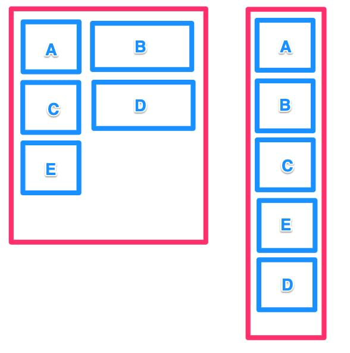

Welcome to F1 Hub
Site Name and Logo
ApexGrid was chosen as the site name because it combines two essential elements of Formula 1 racing: the "apex," which represents precision and skill in cornering, and the "grid," which symbolizes the competitive starting point of every race.
The logo was generated using an AI
Site Purpose
The name reflects the website's purpose of showcasing drivers, teams, and key aspects of Formula 1 in a modern and engaging way.
Scenarios
1. Which Formula 1 driver should I follow and what team do they belong to?
2. What are the main Formula 1 teams and how do they compare to each other?
3. How can I save my favorite drivers and view them later?
Color Schema
Primary Color: White (#FFFFFF)
1. Navbar
2. Footer
Color: Black (#0B0B0B)
1. Buttons
2. Text
Accent Color: Red (#E10600)
1. Borders
2. Headings
Typography
Roboto Mono
1. Headings
2. Navbar
3. Titles
Wideframes
